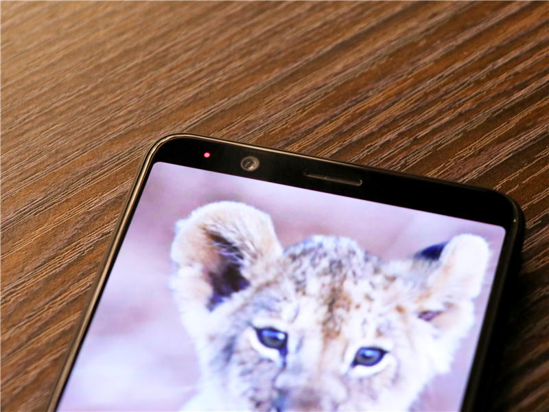

之前听说有一个神秘的品牌新出了一款高颜值AI拍摄手机，
并且后背采用了符合东方人手掌大小的“水银弧”和R角设计，
带着满满的好奇心终于等到了汇威AICALL V9，
对于极其追求颜值的我来说，打开包装的一瞬间便被它的外观征服了。
.jpg)
.jpg)
作为女孩子，最爱关注的还是自拍的美颜功能，而汇威AICALL
V9前置三星2000万像素美颜相机，在硬件素质上就已经超过大部分产品，同时相机还内置了多种滤镜，加上AI美颜，可以满足不同风格的自拍需求。

汇威AICALL
V9的机身经过了130道工序铸就而成，机器的表面特别的细腻，而且不容易沾染指纹，配上高亮CNC侧边线条和精致的R角设计，拿出去都会有一种很精致的感觉，圆润的弧形收腰，全面贴合掌心，手感极其出色。
.jpg )
其 “后置指纹识别键”与其他机型不同，它的正式名称为“One Finger
Zen”，将此前的“五键合一”升级为“六键合一”，具有解锁、返回、Home键、接听、拍照、翻页等功能，并且汇威AICALL
V9背部主摄像头均为索尼的感光元件，f/1.7超大光圈可以在日常生活中拍出专业级的模式，并且拥有全自动的AI算法，22类标签，500种场景的强大功能。看到这里立刻想来一场说走就走的旅行了呢！
.jpg)
北京的夏日如同被一个大火球炙烤着，地面40度的气温终于让我领悟到为什么摘星星、摘月亮，而不去摘个太阳送你！忽发奇想的打算找个海边去度度假，却发现国内暑假期间往返机票都已经飙升到3000多了，甚至比出国还贵，所以最后我们把目标一致的锁定在了免签的韩国济州岛，带着汇威AICALL
V9，去思密达过一个甜甜的浪漫周末。
.jpg)
由于是度假，我们并没有做太多行程计划，反而将目标锁定在两个地方，一个是离机场很近的龙头岩，探索了你不为知的当地渔民的小资生活；其余时间便是宅在了济州神话世界度假村，没事去玩玩变形金刚体验馆，再去和超萌的爆笑虫子拍拍照，顺便在奥斯卡世界开始乌托邦的探险之旅，或者在水上乐园度过一个清凉冰爽的happy
hour，如果你喜欢BIGBANG还可以到他们的咖啡店去坐坐！
.jpg)
轻装上阵，我们没有带繁琐的设备和脚架，仅带了单反和一部新出的汇威AICALL
V9手机，便开始了我们说走就走的3天思密达之旅。虽说带了单反，但是很多情况下还是手机直出的照片比较多，出国必然要考虑当地的习俗，所以我们出于礼貌，就没有拿着相机去一一拍摄，反而用手机拍了一些新奇的小景色，很是有异地风情呢！以下图片均为汇威手机拍摄哟～
.jpg)
一段难忘的旅程要从一个好的心情开始，下了飞机后发现韩国机场的巴士也是宽宽的，在国内没有见过，比较有趣，便用我的新手机拍下了关于韩国的第一张照片～天空本以为会阴天，没有蓝色的云彩，但随即5分钟，立刻就是蓝天白云，偶尔还可以看见很低的云彩一直在飘来飘去。
.jpg)
还没有出机场，便发现我们居然兜里没有带韩币，这个不说，我们连人民币现金都没有带。但在机场的出口有免费兑换和ATM机，由于RMB我们都没带，我们最后只能求助ATM，却发现什么都看不懂...
.jpg)
还没有出机场，便发现我们居然兜里没有带韩币，这个不说，我们连人民币现金都没有带。但在机场的出口有免费兑换和ATM机，由于RMB我们都没带，我们最后只能求助ATM，却发现什么都看不懂...
.jpg)
听说距离机场3公里的地方是龙头岩，龙头岩形似龙头，而且海岸附近有岩石，所以取名为龙头岩。和司机打好招呼后，我们便去龙头岩转了一圈。道路上随处可见的指示牌，还有很多中文的字样。顺便在车上用汇威AICALL
V9手机随手拍了一些街景。
.jpg)
.jpg)
兜兜转转，终于到啦。龙头岩是不需要门票的，但景色还可以，有着一望无际的大海，但景点真的挺小的，和颐和园、故宫、简直就不能比了～
.jpg)
.jpg)
我们本以着去打卡的心情转一圈，不料发现了在岩石一旁卖新鲜海鲜小吃的当地渔民，
基本是都是男人在出海，很多女人在这里卖一些生鲜。一只大鲍鱼的价格是2万韩元，我们买了两盘，所以是4万韩元。
.jpg)
老板很仔细的把鲍鱼去头，用水冲洗多次，然后切成片， 旁边放上辣椒、芥末、辣椒酱，我们最后一致的认为韩国的辣椒酱是美味的。
.jpg)
.jpg)
在吃饭的旁边还放着五颜六色水桶，拿出汇威AICALL V9手机拍了一张，可以看出水桶的颜色表现还是很强的，看起来比某水果拍的还要更艳丽一些呢！
.jpg)
从龙头岩出来，我们便来到神话世界度假村办理入住，办理入住后他说我们2-3层是变形金刚展览馆，刚刚开业，要不要体验一下。都知道男孩子特别喜欢变形金刚汽车人，但是当我走完这几层的展览馆之后发现，原来一个体验馆做的好玩，不管什么主题也是很吸引女孩子的呀！由于里面有很多灯光和炫影技术，所以我在弱光下测试了汇威AICALL
V9手机的夜景拍摄功能。
.jpg)
不仅如此，在用汇威AICALL V9手机拍照的时候还可以先对焦然后再去上下调节曝光，在暗处我一般会减弱曝光，这样对比对就会增大，看着也比较有视觉的冲击力。
.jpg)
.jpg)
变形金刚展览馆主要还是以体验为主，每一个房间的一个小部落都是可以进行互动的，自己可以选择变形金刚的装备、武器和盔甲，还可以跟着你的指挥做出不同的变化。展馆内有VR视频，还可以看变形金刚的电影，还有无数神秘又空旷的通道等着你发现惊喜~
.jpg)
第二天10点，我们准时出现在了济州神话世界主题乐园，由于里面有很多游玩的项目，比如躺着看4D电影，根据电影效果会有冷热风吹过来或者还有水喷过来；比如和好友pk去“杀”虫子；比如去写韩国字这样的体验，背着单反实在是不方便，所以用手机随手拍了很多照片，现在请跟着我的汇威AICALL
V9手机所留下的美好时光，一起去感受主题公园的魅力吧！
.jpg)
一般女生对彩色和花花草草的会感兴趣，在这边基本上都是彩色的，看起来会比较欢乐一些。
.jpg)
.jpg)
下面这个就是我最喜欢之一，爆笑虫子～是一部动画片，现在属于主题乐园的三大主题之一，小小的虫子，无论从神情，到动作都显得十分可爱！
.jpg)
.jpg)
在这么可爱的地方，怎么能不自拍呢？所以打开前置摄像测试了汇威AICALL
V9手机的自拍功能，里面美颜有磨皮和美白的功能，还可以在美颜的模式下调节HDR功能，回看照片时发现也没有锐化的很明显，还是很自然呢。
.jpg)
（含有手机的图片为单反拍摄）
.jpg)
除了在乐园里玩了一天之外，我们去了权志龙开的咖啡厅来打卡，很有设计感的地方，外面便是BIGBANG 的五位成员画涂鸦的地方！涂鸦是五颜六色的，所以在用汇威AICALL
V9手机拍摄这些彩色图片的时候，色彩会呈现特别好。
.jpg)
.jpg)
在咖啡厅的屋顶上有两朵会动的大红色和大黄色的花，简直是好看的不能再好看了，基本上是每个人前来都会拍照的地方。一会花变大了，一会花又变小了，在阳光照进透明玻璃的映衬下，很是小资呢，再点一份甜点和花茶，应该是一个很惬意的午后吧。
.jpg)
.jpg)
在其他的角落里，还有一片懒人沙发，人多的时候基本上都没有空着的地方，来到这里走累了还可以躺一会儿呢！还有最喜欢和养眼的一个角落，喜欢BIGBANG的都应该会懂吧～
.jpg)
.jpg)
当然，除了龙头岩那难忘的生鲜之外，我们还在附近尝了济州特色的烤黑猪肉，味道真的是很难忘，在吃的时候，一边品尝着烤肉，一边用汇威AICALL
V9手机“验毒”，口水不要留下来呀！
.jpg)
手机拍美食一直是我最爱的，但是看到了济州的烤肉，也是吓了我一跳，一大块肉粗暴的放在了烤盘上，对，就是上图这样粗暴！
.jpg)
说吃烤肉，最喜欢的还是用紫苏叶把肉包上，再放一些韩国的辣椒酱，一起放入嘴里，有肉的香味，辣椒酱的香味，还有紫苏叶独特的香味。当然，吃的时候肯定还是要剪开的，同行的小伙伴没有剪过这么大块肉，也要过过手瘾，那种ci的一声，肉被剪成一小块一小块的感觉，你们闭着眼睛感受一下吧。
.jpg)
吃完烤肉，出来走走，虽已经到了夜晚，但人还是挺多的，后来忽然发现好像全世界的小朋友都爱喷泉呀，趁着这会没有小孩，赶紧抓拍了一张。
.jpg)
用过很多手机拍照，有时候拍摄夜景会发现有很多的噪点，这不吃完饭，出来溜达溜达，发现了这么一篇小星星区域，是不是还很浪漫呢，用AICALL V9手机抓拍了一张你们看一下～
.jpg)
出去玩了两天，最后一天泡在了水上乐园，因为有一些隐私的原因并没有拍照，不过说了这么多的吃吃喝喝，最后给大家总结一下吧。毕竟是出国去一趟思密达，所以和大家分享一些出国的小攻略：
机票：我们没有买廉价的机票，犹豫考虑3个半小时飞行的舒适性，以及回来还要带很多零食，所以我们买的是大韩航空，3600/人，提前购票应该会便宜一些呢。
.jpg)
大韩航空整体来说很舒适，返程的时候基本上也是睡了一路，每个座位上都有靠垫，而且还有一块小显示屏可以看电影、打游戏，手柄的背部也是很强大，是全键盘的样子，大哥居然玩了一路的纸牌…
.jpg)
住宿：韩国的民宿和公寓一直是一个特色，我们入住的地方是济州神话世界度假村，蓝鼎酒店和盛捷公寓，公寓约150平米，而且设计的是极简的风格，位置也是比较便利，去公园玩到中午的时候还可以回去睡个大懒觉！
酒店的前台中文说的很好，包括接送机时间，酒店入住等一些情况，特别逗的是我们在用英文问他们的时候，他们一般都会回答中文。
交通：我们所在的地方是一个度假村，并没有涉及太多的市内交通，从机场到龙头岩岛酒店我们打的是专车，提前可以在网上预约接机。济州岛市内也可以打到出租车。
门票：龙头岩的门票是免费的。不过路过龙头岩的时候记住要买一杯橘子汁，应该是我喝过最甜最好喝的橘子汁了；济州神话世界主题公园的门票是39,000 韩元。
拍照：这次我们出来以度假为目的，所以也没有去带太多的拍摄设备，主要还是以手机为主，在使用汇威AICALL V9的时候发现，每拍一张照片，出来的效果都不需要再进行后期修图了。
注意事项：
1.由于是拍照，所以尽量不要用相机单反对着当地人拍摄，是很不礼貌的行为，如果是特别喜欢的画面，可以去买一些小东西，用手机悄悄的拍就应该没问题了。尽量不要太张扬哟！
2.济州神话世界的门票是可以多次进出的，但是要在手上盖一个章，才可以随意进出，所以中午打算出去吃午饭的话，千万不要忘记哟！
3.记得要携带防晒及护肤用品、遮阳帽、转换插头哟，如果设备比较多，还可以带个小的插线板！
4.有的路段是单行线，过马路的时候要看好，而且一定要走斑马线哟～
5.济州岛部分开放了支付宝，不过还是应该要换一些韩币哟